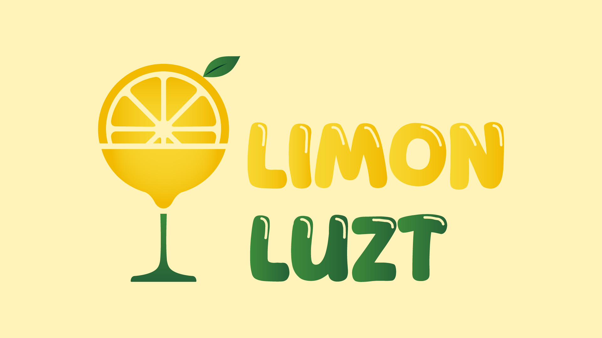
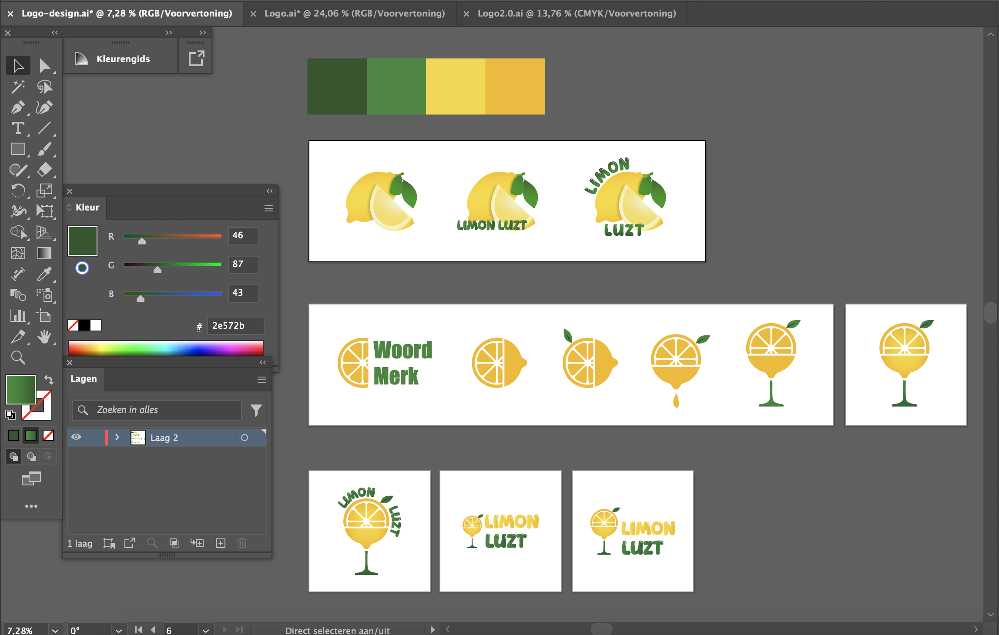
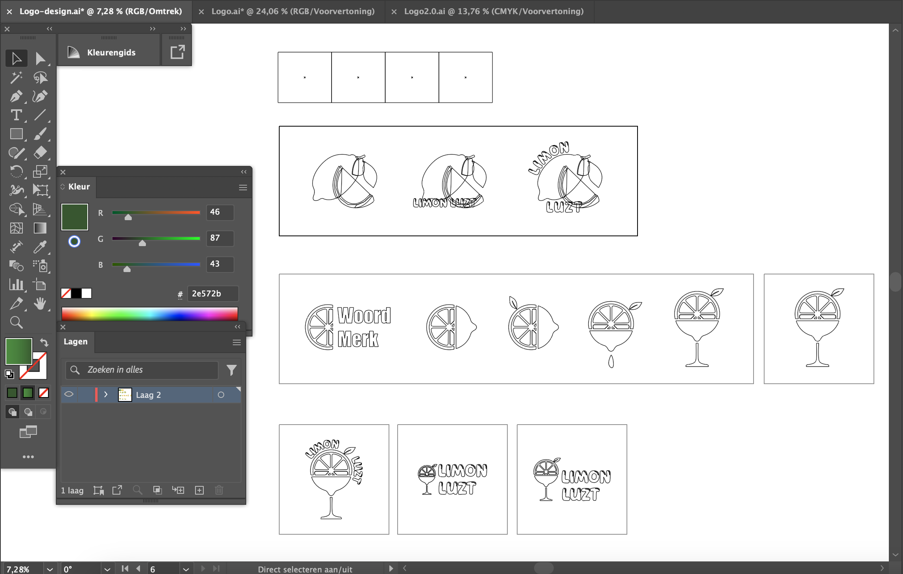
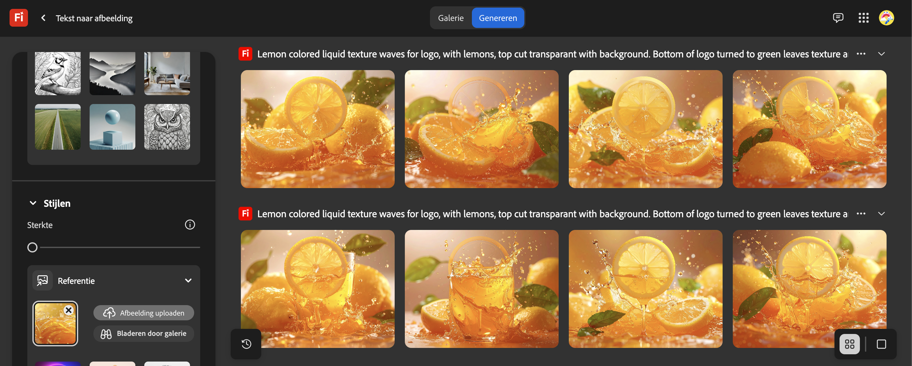
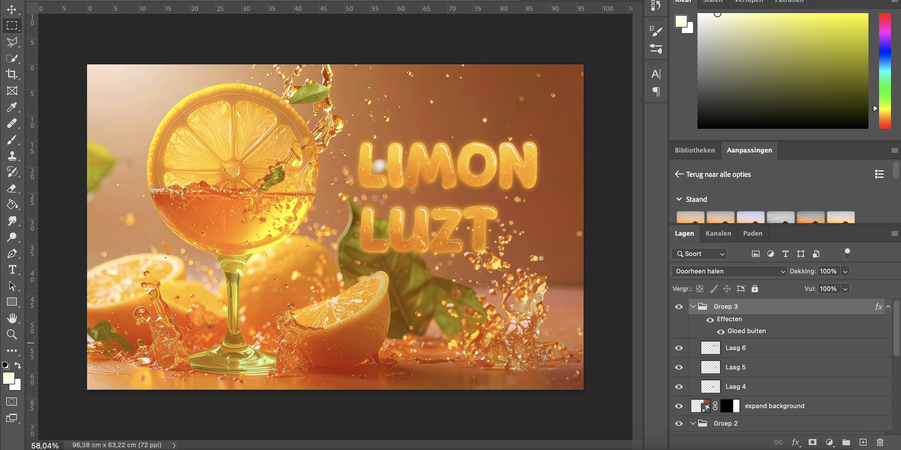
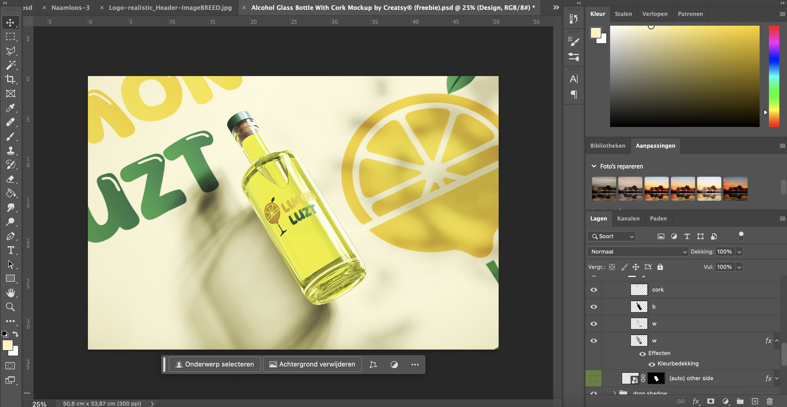
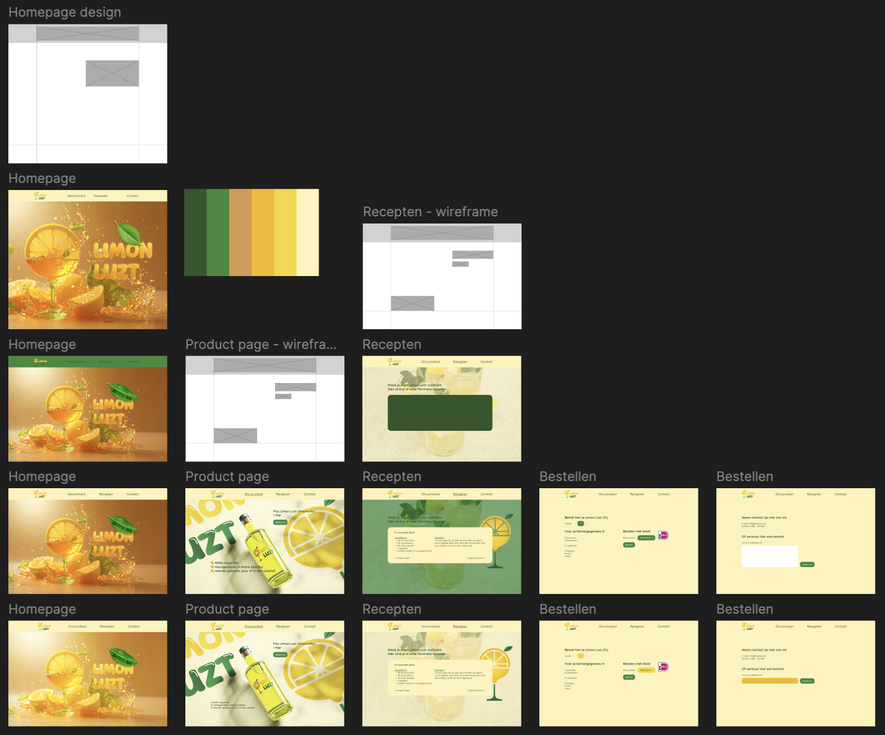

Limon Luzt
Voor project X heb ik gekozen om een website te ontwikkelen voor mijn zelfgemaakte limoncello. Het project is vooral development gericht, maar bevat ook een beetje branding. Ik heb een visuele identiteit voor mijn limoncello merk, Limon Luzt, gecreëerd. Hierna heb ik een website uitgewerkt die getest is binnen de doelgroep.
Klik hier voor de Limon Luzt websiteMijn werkzaamheden
- Projectplan
- Logo ontwerp
- Achtergrond ontwerp
- Brandguide
- Figma Prototype
- Development
- Usertest
- Presenteren
Projectplan
Voordat ik aan het project begon, heb ik gebrainstormd om op een concept te komen voor het project. Toen ik het idee kreeg om het project op mijn zelfgemaakte limoncello te richten, heb ik hiervoor een projectplan gemaakt.
In het projectplan heb ik het concept vastgesteld. Ook heb ik uitgelegd waarom ik dit concept wilde uitwerken, welke werkzaamheden ik van plan was te doen (methodologie) en wat ik zou aanleveren bij de deadline (scope). Daarnaast heb ik hoofd en deelvragen voor het project in het projectplan genoteerd.
De planning voor het project heb ik ook in het projectplan gemaakt. Met deze visie wist ik wat ik ging doen, waarom ik het ging doen en wanneer ik zaken moest afronden. Hierdoor zorgde het opstellen van dit projectplan voor een soepele start voor project x.
Klik hier voor het projectplan
Logo ontwerp

Tijdens het ontwerpen van het logo voor Limon Luzt, heb ik mijn best gedaan om de frisse, zomerse en speelse sfeer van mijn limoncello-merk uit te stralen. Elk onderdeel van het ontwerp draagt hieraan bij.
Het beeldmerk combineert een halve citroen met partjes in de vorm van een cocktailglas. Dit symboliseert zowel het belangrijkste ingrediënt van limoncello (citroen) als het genieten van een verfrissend drankje.
Logo proces
Ik heb gebruik gemaakt van Adobe Illustrator om het logo te ontwerpen. Ik heb niet zoveel iteraties gemaakt als dat ik normaalgesproken doe, omdat ik niet veel tijd in mijn planning had om het branding gedeelte uit te werken. Dit omdat het project vooral development gericht was.


Achtergrond ontwerp
Voor de achtergronden van de website heb ik verschillende ontwerpsoftware gebruikt. Ik heb vooral Adobe Photoshop gebruikt. Daarnaast heb ik voor het eerst geëxperimenteerd met Adobe Firefly.
Achtergrond homepagina

1. In Adobe Firefly, heb ik het beeldmerk van Limon Luzt als een zo realistisch mogelijk drankje laten genereren.

2. Na het creëren van realistische afbeeldingen in Limon Luzt stijl, heb ik deze samengebracht in Adobe Photoshop om een mooie en passende achtergrond neer te zetten.
Achtergrond productpagina

Voor deze achtergrond heb ik een gratis mockup gevonden op www.pacdora.com. Deze heb ik bewerkt met Adobe Photoshop. Hier heb ik ook nog aanpassingen toegebracht zoals belichting, achtergrond kleuren en illustraties.
Brandguide
Klik hier voor de brandguide als PDF

Om de branding van Limon Luzt vast te stellen, heb ik een kleine brandguide gemaakt. Dit is een klein overzicht van de visuele identiteit van Limon Luzt en de regels die erbij horen.
Figma prototype
Ik heb het prototype voor de website uitgewerkt in Figma. Ik werk per pagina van boven naar onder en houd rekening met benamingen van mijn werkgebieden om het ontwerpdocument overzichtelijk te houden. Hieronder is het gehele ontwerpproces van de website weergegeven.

Development
Klik hier voor de Limon Luzt website
Het grootste deel van mijn project ging natuurlijk om development. Nadat ik mijn ontwerpen en prototypes af had, ben ik begonnen aan het uitwerken van mijn website in HTML, CSS en Javascript.
Ik heb de website live gezet op de Hera server van Fontys met behulp van Filezilla. Hierdoor is mijn website voor iedereen bereikbaar, zonder de verplichting om een eigen domein te kopen.
Tijdens het uitwerken van de website, heb ik gelet op leesbaarheid in zowel de code als mijn Github repository (commits). Ik heb ook gemerkt dat ik een stuk sneller en beter ben geworden in het werken met zowel HTML en CSS als Javacsript. Deze vaardigheden zijn het meest ontwikkelt in dit semester.
Ik heb vanaf het begin van het development proces, gebruik gemaakt van Github om alles bij te houden. Ik heb in Github een repository aangemaakt specifiek voor Limon Luzt (project X). Klik op het GitHub logo hieronder om een kijkje te nemen in mijn repository.

Usertest
Klik hier voor mijn volledige documentatie van de usertest
Ik heb een usertest afgenomen binnen de doelgroep, waarbij zowel de vormgeving als de navigatie van de Limon Luzt website werd getest door vijf personen. Hieronder is een overzicht weergegeven van de aanpassingen na de usertest.


Presenteren
Om mijn eindproduct te presenteren, toon ik de website van Limon Luzt. Daarbij zal ik vertellen over het proces van Limon Luzt van idee tot eindproduct. Ik presenteer dit aan docenten en medestudenten op vrijdag 20 juni, in de vorm van een 'presentatiemarkt'.